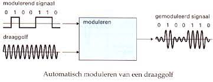

De fysieke laag is van de OSI model de onderste laag en die zorgt voor de overdracht van kabels en draadloze signalen.Deze laag zit ook in je smartphone Hij bestaat uit de hardware en die hardware zit van de accu tot de touchscreen.
De databases: Databases is informatie die verzameld is en die kan je opslaan en beheren in je laptop of computer het doel van databases is dat je informatie kunt delen met anderen dat je toegang aan hun kunt geven. De processor: de procssor is een bestuurssysteem die bestaat uit transistors en die vormen samen schakelingen. Transistors zijn schakelaars daar kan je logische functies mee creëeren . De processor heeft ook verschillende snelheden:Verwerkingssnelheid: Verwerkingssnelheid is hoe snel de gegevens wordt verwerkt de snelheid wordt in mips uitgedrukt dat doen ze, omdat de hoeveelheid instructies die de processor één seconde kan worden verwerkt.Kloksnelheid: kloksneheid is de verwerkingssnelheid van een processor de snelheid wordt gekozen door de klokchip die geeft steeds het zelfde aantal seconde een puls die gaat naar de processor alle verwerkingsstappen gelijk te laten lopen. Intern geheugen (ram): Bij het intern geheugen worden alle instructies en verwerkingen opgeslagen. Door de Ram kan je op je laptop naar verschillende tabbladen te schakelen. Als je computer of laptop uit doe is de ram daarom ook leeg omdat het een tijdelijk geheugen. Alleen als de Ram aanstaat. Ram wordt ook gebruikt om de tijdelijke gegevens en programma's op te slaan terwijl de computer actief is. Rom:is een gedeelte van het intern geheugen (ram): De rom is bij de opstart van de comouter van toepassing. De rom die laat de computer tests doen alle gegevens worden niet verwijderd als je computer laat uitschakelen. Rom is ook een type geheugen dat alleen kan worden gelezen waarvan de inhoud niet kan worden gewijzigd.Het wordt gebruikt om pernamente gegevens en instructies op te slaan die nodig zijn voor het opstarten en functioneren van een computer. Pernament geheugen: Pernament geheugen hangt af naar welk soort geheugen je informatie opslaat. 